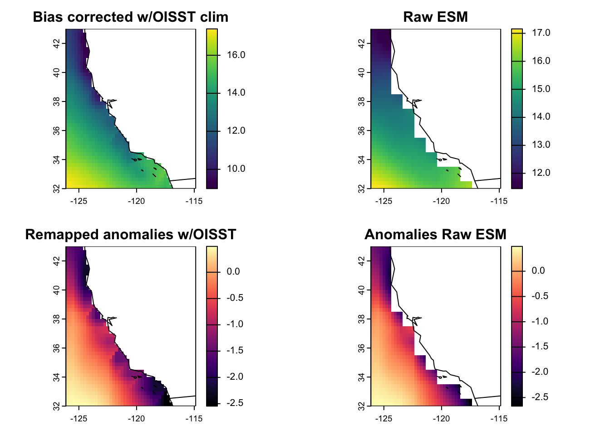

We will not run this script during the webinar due to time constraints. Instead, the script and all required information are provided below. Bias-corrected outputs are available in __data/bias_correct.
ESMs are free-running simulations with mean-state biases and coarse spatial resolutions. This can present problems if you’re working with nearshore coastal species, for example, since data often don’t come close to the coast. One common method of getting around this is by interpolating data using bias correction. Bias correction uses an observational data product to remove mean-state biases and downscale the resolution to a finer resolution.
Important
Note - a lot of physical oceanographers caution against interpolating or bias-correcting ESMs to a (much) higher resolution, as results can often be misleading. Today, we’ll show you how to downscale an ESM from 1˚ to 0.25˚ and perform bias-correction; but always best to chat to an oceanographer first, when working with your own study system.
There are multiple ways to bias correct/downscale an ESM, with the delta-change method being objectively the simplest, and dynamical downscaling being the most difficult (and requiring an ocean modeler..!). Today, we’re going to use the delta-change bias correction method.
We will use the OISST V2.1 dataset to bias-correct our ESM outputs of sea-surface temperature.
When bias correcting, we need to calculate the mean baseline climatology across the same time period for both the observed and ESM datasets. Since the historical run for the CMIP6 ESMs comprise 1850-2014. Today, we will define our climatology as a 20 year time span. Therefore, we will download twenty years of OISST data, from 1995 to 2014.
Defining climatologies
We often use 30 years to define a climatology in marine ecology, but you can shorten or lengthen your climatology based on what makes sense for your question and study system. We used 20 years today to save time.
The simplest form of bias correction is the “delta-change” method (e.g., [S2]). The first step in this procedure for a timeseries of any given climate variable is to identify an appropriate set of observational data and then to compute the mean value of that observed variable over a “baseline” period for which both observations and model output are available.
Step
Description
Output/s
1
Merge all daily OISST files into a single file
_1_OISST_baseline_combined.nc
2
Delete leap days from the OISST time series (and ESM time series if using daily data). Ensure calendar is set to gregorian. (Note we skipped this step today)
N/A
3
Calculate the OISST climatology for 1995-2014, to be used later for bias correction.
_2_OISST_climatology.nc
4
Calculate the climatology for each historical run of each ESM for 1995-2014. We call this our ESM baseline.
Two climatology files (one per model) in __data/bias_correct/esm/_1_climatology
5
Calculate ESM anomalies for each model/SSP combination, by subtracting the ESM baseline from each monthly projection from 2015-2100. This results in a set of anomalies (i.e., deviations from the mean).
Four files (one per model/SSP combination) in __data/bias_correct/esm/_2_anomalies
6
Create a land mask using OISST, used later for bias correction. The mask has the same grid attributes as OISST (i.e., 0.25˚, WGS84 lon/lat).
_3_OISST_mask.nc
7
Interpolate the ESM anomalies onto the OISST grid, using bilinear interpolation to remap the courser CMIP data to the finer grid of the OISST land mask, and fills missing cells (i.e., coastal cells) using the nearest neighbor value.
Four files (one per model/SSP combination) in __data/bias_correct/esm/_3_anomalies_remapped
8
Delta-change bias correction: add the OISST climatology (1995-2014; i.e., the observed mean) to the remapped ESM anomalies in Step 7. This results in a bias-corrected estimate of SST for each ESM projection. The adjustment to the projection for each time step in the time series amounts to the difference between the means of the observations and ESM outputs over the baseline period – hence the name “delta-change”.
Four files (one per model/SSP combination) in __data/bias_correct/esm/_4_bias_corrected
Below, we’ll go through the steps in more detail:
5.1 Merge daily OISST files
Merge all daily OISST files into a single file
Code
# List all processed OISST filesday_ncs <-dir(paste0(pth, oisst_pth_proc), full.names =TRUE) %>%paste0(., collapse =" ") # CDO codecdo_code <-paste0("cdo -s -L ", #Deploy CDO silently and in low memory mode"-f nc4 ", # Output file should be netCDF format"-z zip ", # Compress the output file using zip"-mergetime ", # Merge multiple input netCDF files day_ncs, # The names of the input files" ", paste0(pth, bc_pth, "/_1_OISST_baseline_combined.nc")) # output file # Run tic(); system(cdo_code); toc()
Jessie speed: 0.2s
The .nc output has 240 layers (one for each month from January 1995 to December 2014).
Note we have skipped this step today, but see code below.
Note
Here, we’ve already created monthly means of OISST from the daily data. However, if you’re working with daily data, you might want to remove February 29th to get around any calendar issues when merging files. This code removes the 29th day of February, and sets the calendar to Gregorian (i.e., 365 days).
input_file <-paste0(pth, bc_pth, "/_1_OISST_baseline_combined.nc")output_file <-paste0(pth, bc_pth, "/_2_OISST_climatology.nc")# Calculate the mean in each grid cell (across all years in the time period)cdo_code <-paste0("cdo timmean ", input_file, " ", output_file )system(cdo_code)
This results in …
r <- terra::rast(paste0(pth, bc_pth, "/_2_OISST_climatology.nc"))r #ignore 'time' field
5.5 Create anomalies for ESM projections (2015-2100)
Code
anom_esm <-function(model) { mean_rr <-rast(paste0(pth, bc_esm_pth, "/_1_climatology/tos_mo_", model, "_1995-2014_clim_historical.nc"))### SSPS# Then substract mean climatology from 2015-2100 for both EMSs, creating anomalies filey <-list.files(paste0(pth, cmip_pth_proc), pattern ="ssp", full.names = T) filey <- filey[grep(model, filey)]for (i in1:length(filey)) {#isolate SSP from string ssp_string <-strsplit(filey[i], model, "_")[[1]][2] ssp <-strsplit(ssp_string, "_r1i1p1f1")[[1]][1]#import raster and calc anomalies scen <-rast(filey[i]) anom <- scen - mean_rr writeCDF(anom, paste0(pth, bc_esm_pth, "/_2_anomalies/tos_mo_", model, "_2015-2100_anom", ssp, ".nc"),overwrite = T) }}# Run functiontic(); anom_esm("ACCESS-CM2"); toc() #Jessie: 0.689 secondsanom_esm("IPSL-CM6A-LR")
The above code results in temperature anomalies for both ESMs (i.e., deviations from the mean). In the image below, the anomalies below represent the ESM projections for ACCESS-CM2 SSP2-4.5, minus the corresponding historical climatology/baseline (1995-2014) created in Step 4.
rr <- terra::rast(paste0(pth, bc_pth, bc_pth_anom, "/tos_mo_ACCESS-CM2_2015-2100_anom_ssp245.nc"))plot(rr[[1]], main ="ACCESS-CM2 anomalies SSP245 Jan 2015"); maps::map("world", add = T)
5.6 Create a land mask with OISST
The CDO code below applies a conditional statement to the sst variable.
- If sst is equal or greater than 2, sst is replaced with 1.0.
- If sst is NOT equal or greater than 2, sst is replaced with sst/0.0, which is essentially NaN.
Code
infile <-paste0(pth, bc_pth, "/_2_OISST_climatology.nc")outfile <-paste0(pth, bc_pth, "/_3_OISST_mask.nc")# make a mask saying "NA:land, 1:ocean"system(paste0("cdo -expr,'sst = ((sst>-2)) ? 1.0 : sst/0.0' ", infile, " ", outfile))#Plotting the mask results in...r <-rast(outfile)plot(r, main ="OISST land mask"); values(r) %>%range(na.rm=T); maps::map("world", add = T)
[1] 1 1
5.7 Interpolate ESM anomalies to OISST grid
Here, we use bilinear interpolation to remap the course CMIP6 ESM anomalies created in Step 5 to the spatial extent and resolution of OISST, filling in missing cells (i.e., cells close to the coast) with nearest neighbor. Note that this can be processor intensive, especially if working with multiple ESMs and SSPs, so we use parallel processing with furrr.
The code below uses a combination of NCO and CDO.
The resulting four files are ESM anomalies, that have been remapped and interpolated using OISST.
Code
input_folder <-paste0(pth, bc_pth, "/", bc_pth_anom)output_folder <-paste0(pth, bc_pth, "/", bc_pth_anom_rm)msk <-paste0(pth, bc_pth, "/_3_OISST_mask.nc")# Function to do the re-gridding -------------------------------------------do_regrid <-function(f) { output_file <-basename(f) %>%# Get input file namegsub(".nc", "_remapped.nc", .) %>%# Add "_remapped" to end of file namepaste0(output_folder, "/", .) # Step 1 - set grid via nco cdo_code <-paste0('ncatted -O -a units,longitude,c,c,"degrees_east" -a units,latitude,c,c,"degrees_north" ', f, " ", paste0(output_folder, "/tmp1.nc"))system(cdo_code)# Get variable name rr <-rast(paste0(output_folder, "/tmp1.nc")) vary <-varnames(rr)# Step 2 - remove lat/lon attributes cdo_code2 <-paste0('ncatted -O -a grid_mapping,', vary, ',d,, ', paste0(output_folder, "/tmp1.nc"), ' ', paste0(output_folder, "/tmp2.nc"))system(cdo_code2)# Step 3 - remap ESM anomaly with OISST mask using bilinear interpolation# Set missing vals to nearest neighbour cdo_code3 <-paste0("cdo -s -L -f nc4 -z zip ", # Zip the file up"-setmisstonn ", # Set missing values to nearest neighbor value"-remapbil,", msk, " ", # Remap with OISST mask sing bilinear interpolationpaste0(output_folder, "/tmp2.nc"), " ", #input filepaste0(output_folder, "/tmp3.nc")) # output filesystem(cdo_code3)# Step 4 - remove mask cdo_code <-paste0("cdo -s -L -f nc4 -z zip ", # Zip the file up"-mul ", msk, " ", # Multiply the result of the lines, below by the mask to make land NApaste0(output_folder, "/tmp3.nc"), " ", output_file) # Mask the remapped anomaly file, and save as output_filesystem(cdo_code)# Step 5 -remove temporary files system(paste0("rm ", output_folder, "/tmp1.nc", " ", output_folder, "/tmp2.nc ", output_folder, "/tmp3.nc"))}# Run function ------------------------------------------------------------files <-list.files(input_folder, pattern ="anom", full.names =TRUE) # Files to processplan(multisession, workers =14) # Setting up to run in parallel, change workers to suit your machine tic(); furrr::future_walk(files, do_regrid); toc() plan(sequential) # Go back to sequential processing# If having trouble with using future_walk(), you can try the for loop version.# However, this takes longer, since it iterates over each file one at a time!# for (f in files) { # do_regrid(f)# print(f)# }
Jessie speed: ~6s
There’s a lot going on in this function. Let’s break it down…
5.7.1 Create output_file name
Takes the input file (e.g., tos_mo_ACCESS-CM2_2015-2100_anom_ssp245.nc), and adds _remapped to the end of the file name.
output_file <-basename(f) %>%# Get input file namegsub(".nc", "_remapped.nc", .) %>%# Add "_remapped" to end of file namepaste0(output_folder, "/", .) output_file#[1] "/Users/admin/Documents/GitHub/BMLworkshop/__data/bias_correct/esm/_3_anomalies_remapped/tos_mo_ACCESS-CM2_2015-2100_anom_ssp245_remapped.nc"
5.7.2 Set grid via NCO
This takes the file created above, and uses the ncatted command from NCO to modify the input file’s longitude and latitude variables’ attribute units, setting them to degrees_east and degrees_north, respectively. The output is saved as tmp1.nc. We then get the variable name from the file, which will be the original name of the file, e.g., tos_mo_ACCESS-CM2_2015-2100_anom_ssp245.
cdo_code <-paste0('ncatted -O -a units,longitude,c,c,"degrees_east" -a units,latitude,c,c,"degrees_north" ', f, " ", paste0(output_folder, "/tmp1.nc"))system(cdo_code) rr <-rast(paste0(output_folder, "/tmp1.nc")) vary <-varnames(rr)
5.7.3 Remove lon/lat attributes
This code removes the grid_mapping attribute from the variable(s) specified in vary, and save the output as tmp2.nc.
Here, we remap the ESM anomalies with the OISST mask msk using bilinear interpolation, and set missing values to nearest neighbor. The output is saved as tmp3.nc.
cdo_code3 <-paste0("cdo -s -L -f nc4 -z zip ", # Zip the file up"-setmisstonn ", # Set missing values to nearest neighbor value"-remapbil,", msk, " ", # Remap with OISST mask sing bilinear interpolationpaste0(output_folder, "/tmp2.nc"), " ", #input filepaste0(output_folder, "/tmp3.nc")) # output filesystem(cdo_code3)
5.7.5 Remove the OISST mask
This code uses the OISST mask to turn land values back to NA.
cdo_code <-paste0("cdo -s -L -f nc4 -z zip ", # Zip the file up"-mul ", msk, " ", # Multiply contents of file with the mask to make land NApaste0(output_folder, "/tmp3.nc"), " ", output_file) # Mask the remapped anomaly file, and save as output_filesystem(cdo_code)
5.7.6 Remove temporary files
We use the rm command (i.e., a base LINUX function) to remove the three temporary files created previously.
Here, we use list.files() to list all files in our input_folder with the pattern anom in the file name. We then set up our session to run in parallel, where I (Jessie) have set to 14 workers (you will need to change this to suit your machine). We then run the do_regrid() function in parallel using future_walk. Once the function has finished running, we set our session back to normal (i.e., sequential) processing.
files <-list.files(input_folder, pattern ="anom", full.names =TRUE) # Files to processplan(multisession, workers =14) # Setting up to run in parallel, change workers to suit your machine tic(); furrr::future_walk(files, do_regrid); toc() #Jessie: 5.7 secondsplan(sequential) # Go back to sequential processing
Below left, we see the ESM anomalies created in Step 5, where we subtracted the ESM climatology (1995-2014) from the projections (2015-2100). On the right is the output of this step, representing the remapped anomalies using the OISST mask. Both of these fields represent an ACCESS-CM2 SSP2-4.5 temperature projection for January 2015.
If you ever receive errors when using CDO relating to gridding, projections or remapping, it’s a good idea to check the grid structure of the file using griddes, and ensure that the files you are manipulating/trying to create have the same grid structure as your input file.
system(paste0("cdo griddes ", inputfile))
5.8 Bias correction
Now, the final step: delta-change bias correction. Here, we add the OISST climatology (1995-2014; i.e., the observed mean) to the remapped ESM anomalies created in Step 7. This results in a bias-corrected estimate of ocean surface temperature for each ESM projection. The adjustment to the projection for each time step in the time series amounts to the difference between the means of the observations and ESM outputs over the baseline period – hence the name “delta-change”.
Code
input_folder <-paste0(pth, bc_esm_pth)obs <-paste0(pth, bc_pth, "/_2_OISST_climatology.nc")# Function ----------------------------------------------------------------do_add_clim <-function(f) { output_file <-basename(f) %>%gsub("_anom_", "_bc_", .) %>%# Replace anom code in file name with a code for bias corrected (bc)paste0(input_folder, "/_4_bias_corrected/", .) # Include the path cdo_code <-paste0("cdo -s -L -f nc4 -z zip ", # Zip the file up"-add ", f, " ", # To the remapped regridded anomalies, add... obs, " ", output_file) # The observed climatology (map of means)system(cdo_code)}# Run function ------------------------------------------------------------files <-list.files(paste0(input_folder, "/_3_anomalies_remapped"), pattern ="remapped", full.names =TRUE) # The files we want to processtic(); walk(files, do_add_clim); toc()
Jessie speed: ~1s
This results in bias-corrected fields of ocean surface temperature for each month from 2015-2100, for both ESMs and climate scenarios, such as the below field for January 2015 for ACCESS-CM2 SSP-2.45.
Code
par(mfrow=c(2,2))input_folder <-paste0(pth, "/__data/bias_correct/esm")rr <-rast(paste0(input_folder, "/_4_bias_corrected/tos_mo_ACCESS-CM2_2015-2100_bc_ssp245_remapped.nc"))[[1]]plot(rr, main ="Bias corrected w/OISST clim")maps::map("world", add = T)tt <-rast(paste0(pth, cmip_pth_proc, "/tos_Omon_ACCESS-CM2_ssp245_r1i1p1f1_gn_201501-210012.nc"))[[1]]plot(tt, main ="Raw ESM")maps::map("world", add = T)rr <-rast(paste0(pth, bc_esm_pth, "/_3_anomalies_remapped/tos_mo_ACCESS-CM2_2015-2100_anom_ssp245_remapped.nc"))[[1]] plot(rr, col = viridis::magma(255), main ="Remapped anomalies w/OISST")maps::map("world", add = T)rr <-rast(paste0(pth, bc_esm_pth, "/_2_anomalies/tos_mo_ACCESS-CM2_2015-2100_anom_ssp245.nc"))[[1]]plot(rr, col = viridis::magma(255), main ="Anomalies Raw ESM")maps::map("world", add = T)

Above: All fields represent January 2015 for ACCESS-CM2 SSP-2.45. Top left: Bias corrected ocean surface temperature (Step 8). Top right: Raw temperature field for the ESM. Bottom left: Remapped anomalies using the OISST grid (Step 7). Bottom right: Anomalies using the raw ESM grid (Step 5).
5.9 Rinse and repeat
Now, we repeat Steps 5-8 for the 1995-2014 time period from both ESMs. This results in bias-corrected monthly temperature fields for this time period, from the historical run.